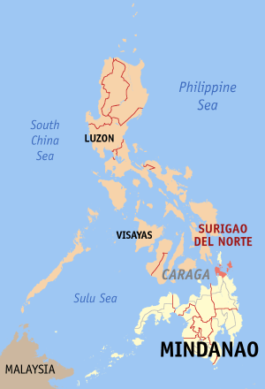

HISTORY OF SURIAGO DEL NORTE
Surigao del Norte was once a part of an old territory that existed in Northeastern Mindanao called "Caraga" named after the people called "Calagans" who were believed to be of Visayan origin. They were the inhabitants of the province that time.
In 1538, Francisco de Castro, a Portuguese-born Spaniard in the expedition from Ternate in search of Loaisa, landed on what presently is Surigao del Norte province. Thereupon he baptized the inhabitants to Christianity.
Historically, the early Spanish settlements were established in Tandag. In 1638, the Recollects had a residence in the towns of Tandag, Butuan, Sidargo (Siargao), Bislig and Linao, a town located in the interior of Agusan.
It was on February 1, 1752, a year after the town of Siargao (Numancia) was burned by the Moros (Muslim Pirates), when the Recollects residence was transferred to Surigao.
In 1860, six military districts were established in Mindanao. Surigao and Agusan, including the territory lying between Butuan and Caraga Bays, formed the third District called the East District which was later changed in 1870 to "Distrito de Surigao".
In 1911, during the American Regime, Agusan was created as a separate province with Butuan as its capital.
It was on June 19,1960, through Republic Act 2786 that Surigao was divided into two provinces : Surigao del Norte and Surigao del Sur.
